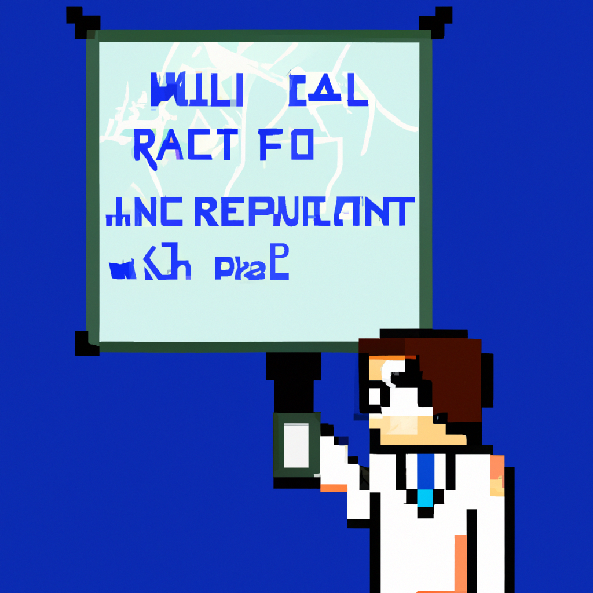

Why AI will never replace the radiologist
AI has been making massive strides in the medical field, from diagnosing diseases to assisting with surgeries. However, the use of AI in radiology is something that has been met with much debate. On one side, some believe that AI can take over many of the duties of a radiologist, from analyzing images to determining a diagnosis. On the other side, there are those who feel that AI can never truly replace a radiologist.
To understand why AI can’t completely replace a radiologist, it’s important to consider the complexities of radiology. Unlike many other medical fields, radiology encompasses a wide range of topics, from the basics of interpreting imaging scans to more advanced subjects such as image synthesis and 3D reconstruction. It’s not enough to simply look at an image and determine what it is – a radiologist must also understand the context of the image and how it fits into the overall medical picture. AI simply doesn’t have the capacity to interpret and analyze medical images in the same way that a radiologist can.
Furthermore, radiologists are highly trained professionals, with years of experience behind them. AI doesn’t have the same level of experience, and can’t effectively replace the judgment and expertise of a trained radiologist. AI can provide a helpful second opinion, but it’s not a substitute for the expertise of a radiologist.
Finally, AI can’t replace the human factor in radiology. Radiologists are more than just diagnosticians – they provide comfort and reassurance to their patients, and are often the first line of support during difficult medical situations. AI simply can’t match the compassion and empathy of a radiologist.
At the end of the day, AI can certainly help to improve the accuracy and efficiency of radiology, but it can never replace a radiologist. AI can be a useful tool, but it can never replace the expertise, judgment, and compassion of a trained radiologist.